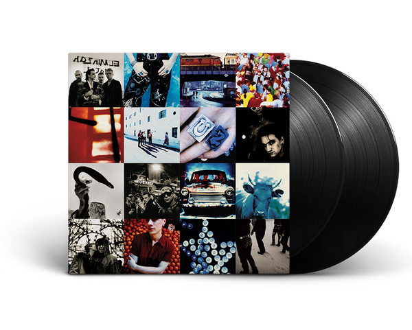
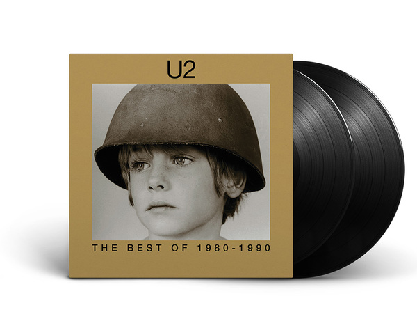
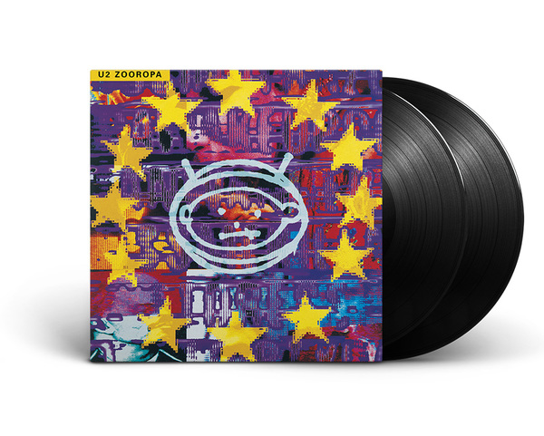

ACHTUNG BABY
Grabado durante seis meses en Hansa Studio en Berlín y Windmill Lane en Dublín, Achtung Baby es el séptimo álbum de estudio de U2. Producido por los antiguos colaboradores de U2, Daniel Lanois y Brian Eno con Steve Lillywhite, Achtung Baby fue diseñado por Flood y dirigido por The Fly
Comprar

THE BEST OF 1980-1990
El primer lanzamiento de la compilación de U2, The Best Of 1980-1990 fue directo al Número 1 en el Reino Unido, Irlanda, Canadá y en todo el mundo en su lanzamiento original en noviembre de 1998. La colección de 16 pistas presenta canciones seminales desde los comienzos de la carrera de la banda, así como muchos de sus mayores éxitos mundiales.
Comprar

ZOOROPA
El octavo álbum de estudio de U2 se lanzó en julio de 1993 y alcanzó el número 1 en el Reino Unido, Estados Unidos, Irlanda, Japón, Canadá, Australia, Nueva Zelanda, Italia, Suecia, Austria, Francia, Suiza, Alemania, Holanda, Noruega. , Dinamarca e Islandia. Producidas por Flood, Brian Eno y The Edge, las 10 pistas de Zooropa, inspiradas en las experiencias de la banda en el Zoo TV Tour
Comprar